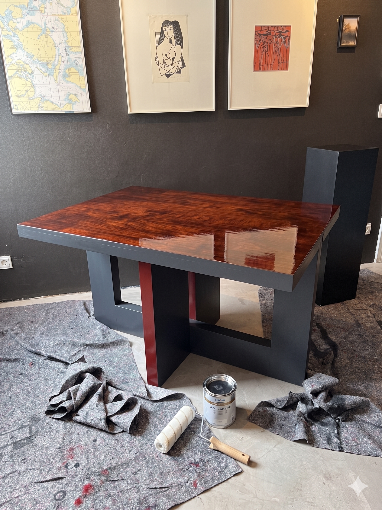
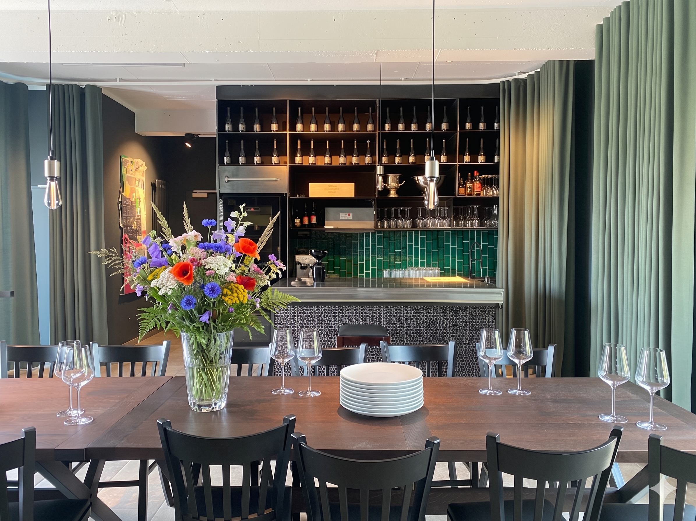
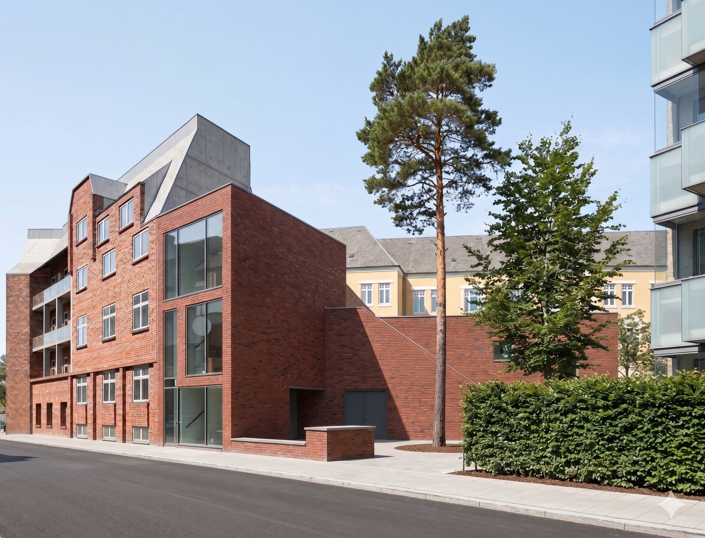
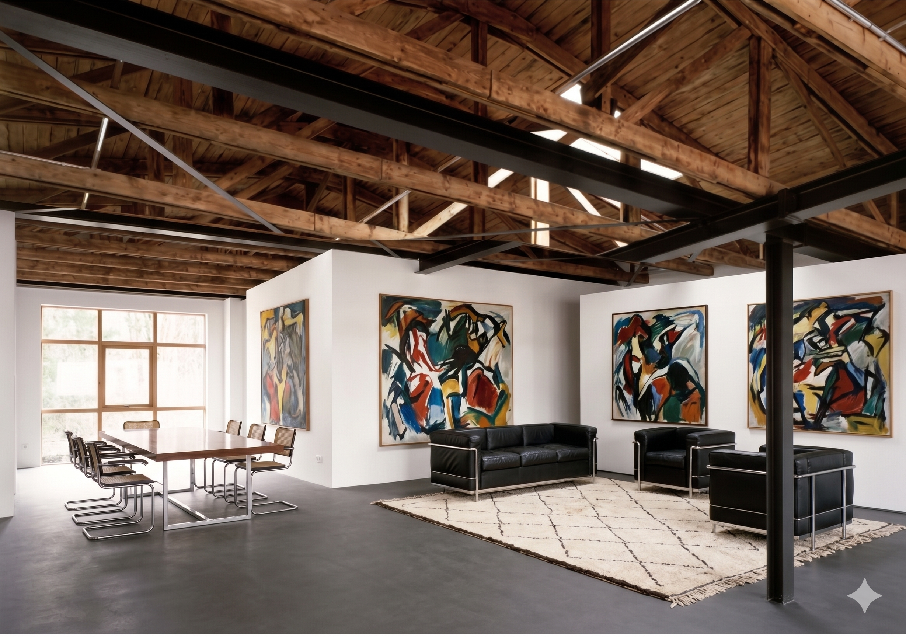
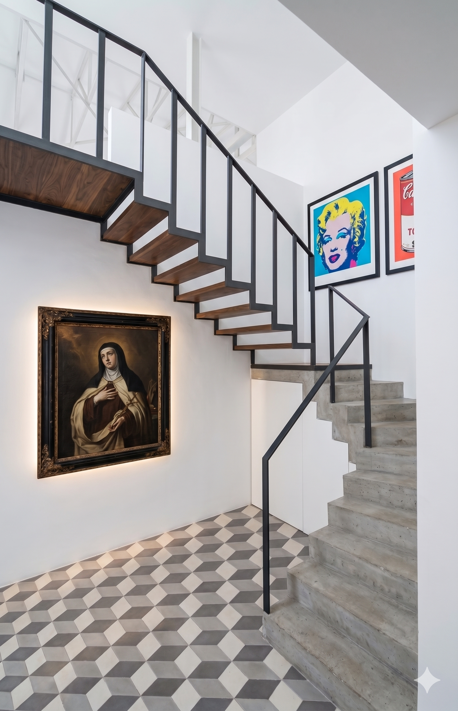
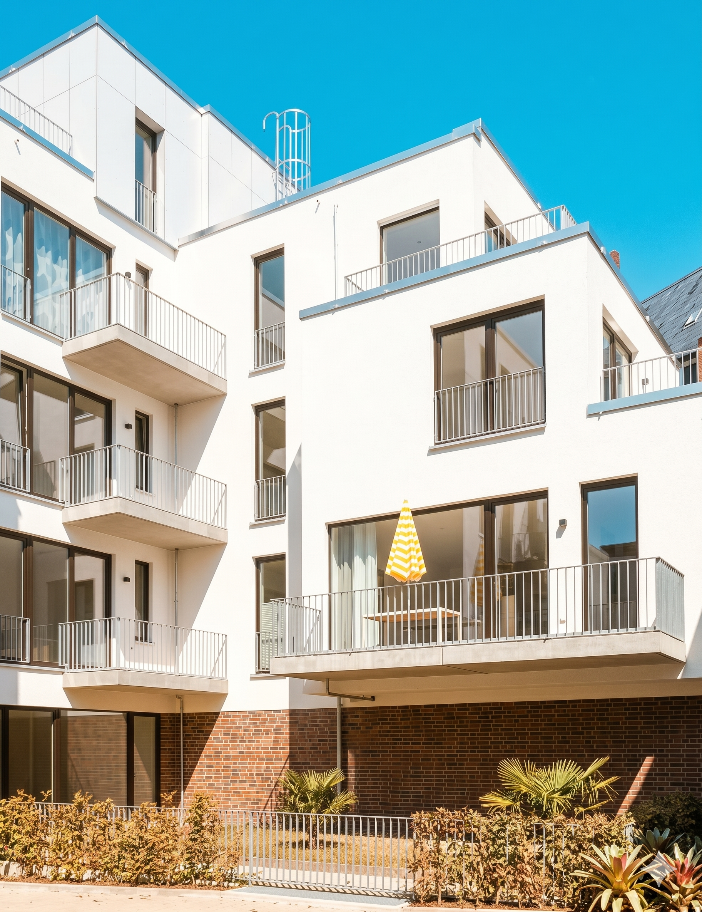
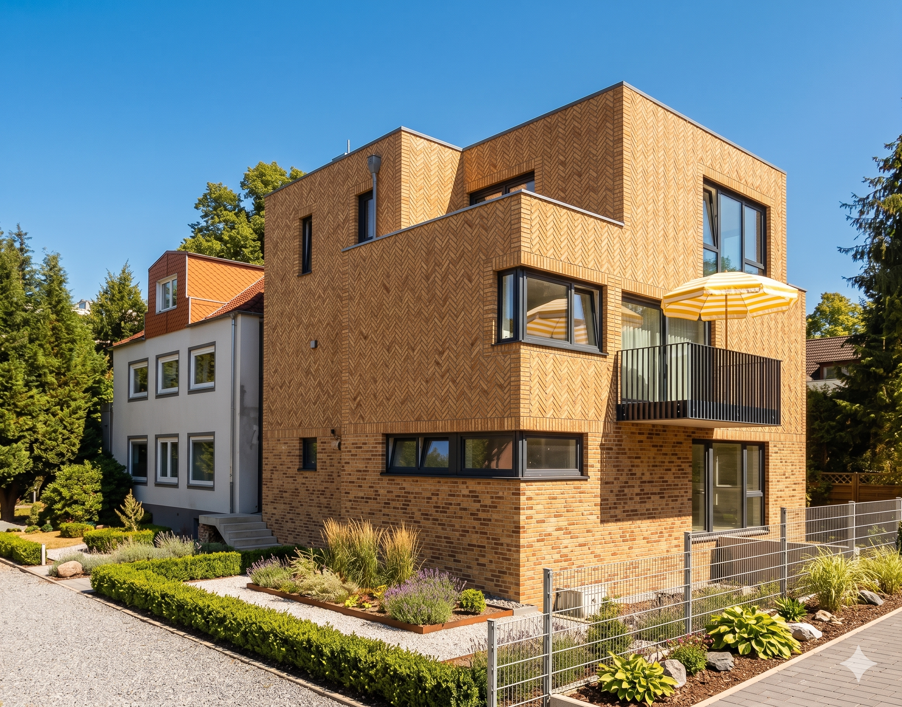
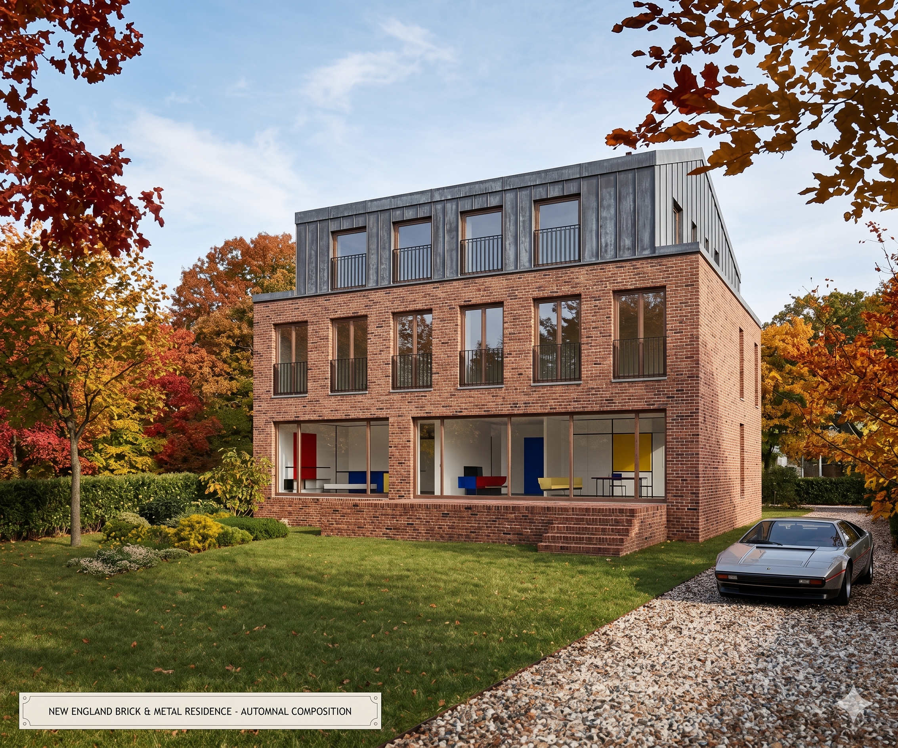
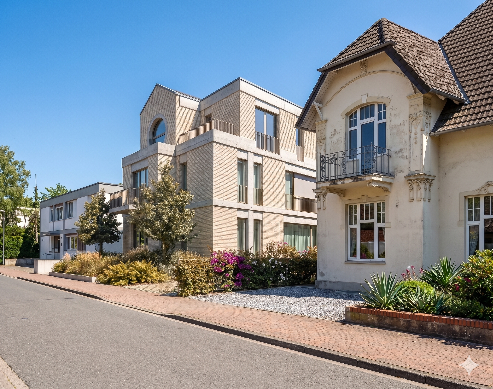
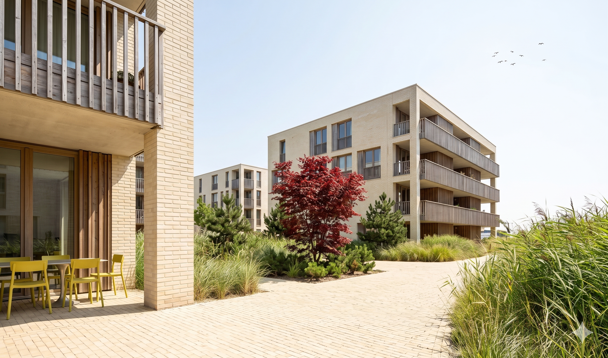

Mach Deinen Raum passend zum Lebensentwurf.

Möbeldesign 2026
Interiordesign Vinothek 2023


Architektur in Hamburg 2016

Umbauten in Hamburg 2015
Hamburg-Blankenese 2015

Neubau 11 Wohnungen in der Rothestraße, Hamburg-Ottensen 2015

Neubau 2 Wohnungen in der Wrangelstraße, Hamburg-Stellingen 2016

Sanierung einer Fassade und Modernisierung eines Wohnhauses, Hamburg 2016

Entwurf eines Wohnhauses mit 5 WE in Wedel 2016

Wettbewerb für eine Wohnbebauung und Ärztehaus in Schleswig an der Waterkant, 2016
